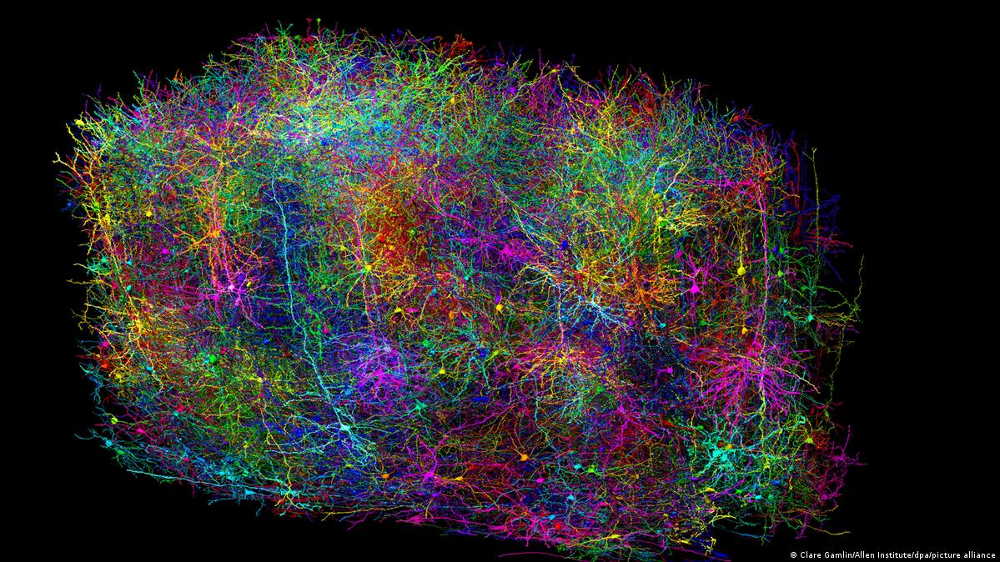
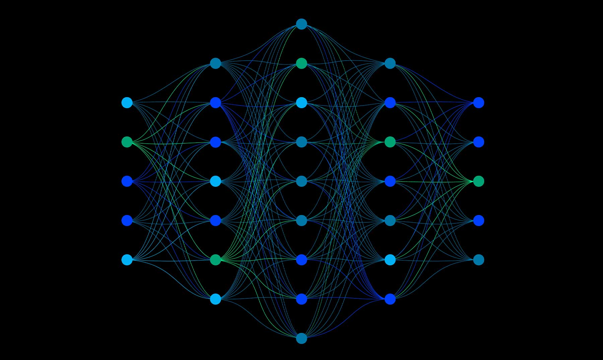
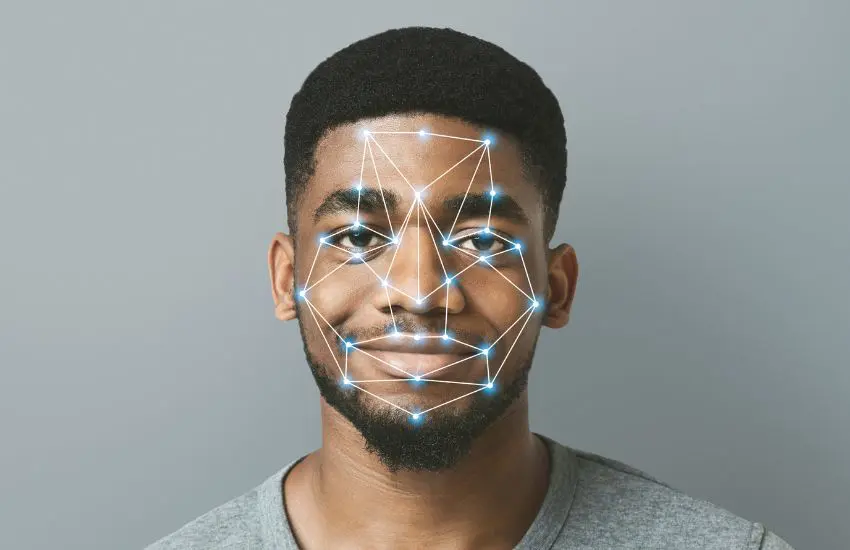
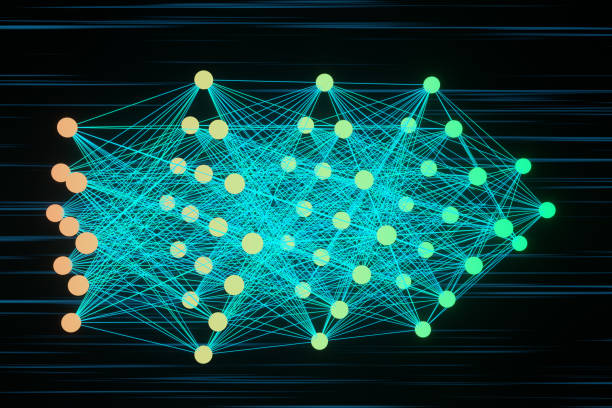

Neuronas artificiales
Unidades de cálculo que reciben señales, las ponderan y producen una salida, igual que una neurona biológica.

Explora cómo las redes neuronales artificiales imitan el funcionamiento del cerebro humano para reconocer patrones, aprender de los datos y tomar decisiones cada vez más precisas.
Tres ideas fundamentales para entender cómo aprenden las máquinas.

Unidades de cálculo que reciben señales, las ponderan y producen una salida, igual que una neurona biológica.
Las redes neuronales requieren grandes cantidades de datos para aprender patrones y generalizar a nuevas situaciones.
Mediante algoritmos de entrenamiento, las redes ajustan sus parámetros internos para minimizar errores y mejorar su desempeño en tareas específicas.

Descubre el recorrido de la información desde la capa de entrada hasta la capa de salida de una red neuronal.
Ver más
Desde el reconocimiento de voz hasta el diagnóstico médico, así se aplican las redes neuronales hoy en día.
Escríbenos